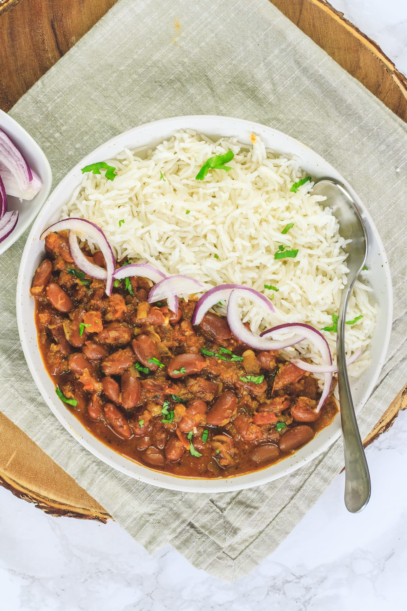

Rajma Chawal Recipe

What Is Butter Chicken?
One of the most popular dishes in North India from Punjab.
In this Punjabi rajma chawal delicacy, cooked kidney beans
is excitingly flavoured with a wide array of ingredients ranging
from ginger and green chillies to tomatoes and onions, spices and
masala powders too and then mixed with rice. However, you will be
surprised to see that all these are everyday ingredients, which you
do not have to go shopping for!
Ingredients
For the For Rajma
- 2 cups cooked Red Kidney Beans or Rajma
- 2 Tomatoes
- 1 large Onion
- 1-2 cloves Garlic
- 1/2" piece of Ginger
- 2 tsp Cumin Powder or Jeera powder
- 1 tsp of Coriander Powder or Dhania Powder
- 1/2 tsp of Garam Masala
- 1 tsp of Cumin seeds or Jeera
- 1 tsp Sugar or Jaggery powder
- 1 tbsp of Kasuri Methi (Optional)
- 4 tsp of Oil
- Salt to taste
- Water
- A handful of coriander leaves for garnish
For the Chawal:
- 2 cups of Water
- 1 cup of Rice (preferably Basmati)
Recipe
- Wash the rice twice with sufficient water.
- In a deep pan, bring 2 cups of water to boil.
- Once it comes to a rolling boil, add the washed rice and cover
and cook until the rice is done.
- Drain out any excess water.
- Alternatively, pressure cook the rice for around 2-3 whistles or
- 8-10 minutes after the pressure builds up to cut the rice
- cooking time into half.
- Heat the oil in a pan and add the cumin seeds.
- Grind together the onion, ginger and garlic and add to
the pan.
- Fry the onion paste until it turns slightly brown or
for about 3-4 minutes.
- Grind the tomato into a puree.
- Add the tomato puree to the pan and mix well. Fry for
2-3 minutes.
- Now add all the spice powders and 1 cup water and allow
it to simmer on low heat for 4-5 minutes. If you used
dried beans and cooked it yourself, then instead of
plain water, you can use the water in which the beans
were cooked in.
- Add the cooked beans, salt and sugar or jaggery and
cook for another 2-3 minutes.
- Add the kasuri methi and mix well.
- Garnish with fresh coriander leaves and serve with
rice.
Return to top
Return to Main Page